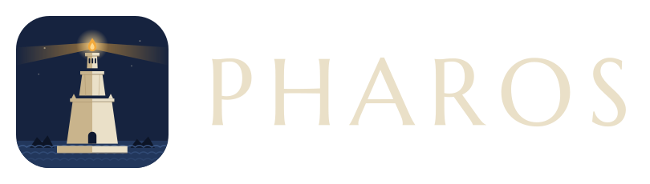
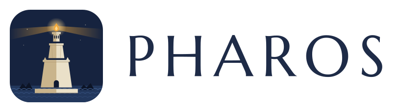

A colored light on the horizon, before you run onto the rocks.
Pharos keeps your Claude usage limits in view — quietly, from the GNOME top panel — so you're never surprised by "limit reached" mid-thought.
Runs entirely on your machine — no Pharos server, no account, and nothing about your usage leaves your computer. How your data is handled.
64% of the session window, 32% of the weekly — the number past its threshold wears the caution gold.
Read the beacon
The beacon always shows your closest limit — shape and color both change, so the warning still reads in grayscale. Click it for exact percentages and reset times.
Sailing normally. The tower stands, the flame is lit.
Half the window is spent. Worth a glance now and then.
Approaching the limit. Ease off, or check when it resets.
The limit is upon you. The reset time is in the menu.
All three thresholds are adjustable in Settings.
Install
Needs GNOME Shell 46, 47 or 48, and Claude Code signed in on this machine — Pharos reads the sign-in Claude Code already has.
-
Get the beacon
Open a terminal and paste this — it downloads the latest release and installs it for your user.
curl -LO https://github.com/aymenkrifa/Pharos/releases/latest/download/pharos@aymenkrifa.github.io.shell-extension.zip gnome-extensions install pharos@aymenkrifa.github.io.shell-extension.zipPrefer source? Clone the repo and run
./install.sh. -
Reload GNOME Shell
On X11: press
Alt + F2, typer, press Enter.
On Wayland: log out and back in. -
Light the beacon
Turn Pharos on — once is enough:
gnome-extensions enable pharos@aymenkrifa.github.io…or flip the switch in the Extensions app. The tower appears in your top panel right away.
Make it yours
Your plan decides which limits exist: a 5-hour session window, a weekly window, and on some plans a weekly window per model. Pharos finds them all and lists them in the menu. Settings — in the Pharos menu — controls what reaches the panel.
Two switches per limit: Show puts its number on the panel, Tint lets it color the beacon. By default everything is shown and the beacon follows your worst number. Only care about one window? Turn the rest off — they're still one click away in the menu.
Pick how the panel writes its numbers. Full names
(Session 10% Weekly 50% Fable 82%) is the
default; two compact styles are also on offer. Every style still
colors each number on its own.
Set the percentages where the beacon steps up a state — caution, full beam, on the rocks. Defaults are 50 / 75 / 90.
How often Pharos checks usage while the menu is closed, so the
beacon stays current. Set it to 0 to check only when you
open the menu. Readings older than a minute get an age tag, like
(12m), so you always know how fresh the number is.
More than one account
Work and personal? Open Settings → Accounts from the Pharos menu and add each one — a label and the path to its credentials file. The menu grows a switcher, and the panel gets a label so you always know which account you're watching.
One account needs no setup at all: Pharos finds Claude Code's standard sign-in on its own and keeps it fresh.
Choose how the active account's name sits next to the beacon: its full label, just the first letter, or hidden entirely. The menu switcher always spells it out in full either way.
Your data stays yours
Pharos runs entirely on your machine. It reuses the sign-in Claude Code already saved, asks Anthropic for your usage numbers, and shows them in the panel. That's the whole story — no Pharos server, no account to create, nothing to opt out of.
Pharos's entire network layer is one short file with exactly two
addresses declared at the top:
api.anthropic.com/api/oauth/usage (your numbers) and
platform.claude.com/v1/oauth/token (sign-in renewal — the
same endpoint Claude Code uses). No middle-man server, no analytics, no
third-party anything. Don't take our word for it —
read the file; it's two hundred
lines.
Pharos never handles your login — it reads the token Claude Code saved after you signed in with Anthropic. It couldn't see your password if it tried.
The one thing Pharos reads is that same token, in the same place
(~/.claude), which only your user account can open. And to
be fully upfront about the one write it does: when Pharos renews the
sign-in, it saves the renewed token back to that same file — same
place, same permissions — so Claude Code stays signed in too. No new
secret store, no copy sent anywhere.
Pharos calls a single usage endpoint — percentages and reset times. It has no access to your conversations or anything you send to Claude.
Prefer that Pharos never renew or write anything at all? Turn off Renew the sign-in automatically in Settings. Pharos then only ever performs the read-only usage request — no token endpoint, not a byte written to disk. The trade-off: when the sign-in expires, the panel waits until you next use Claude Code.
And it's free software, GPL-2.0-or-later — every line is on GitHub to read for yourself.